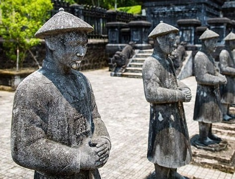
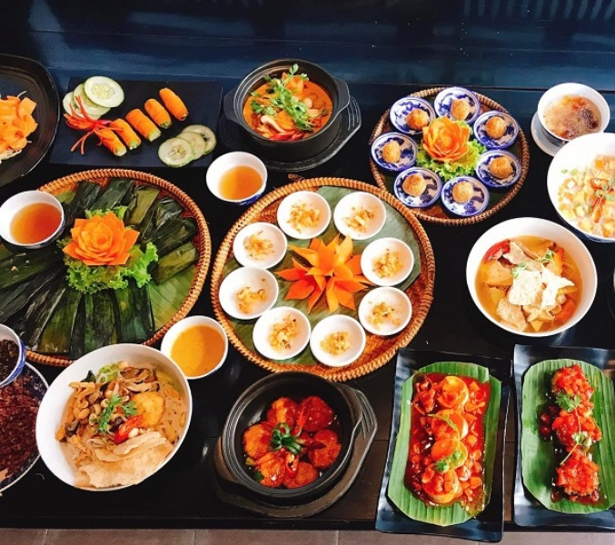
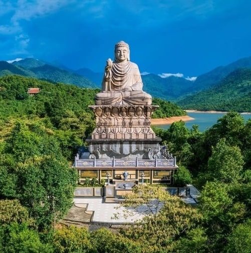
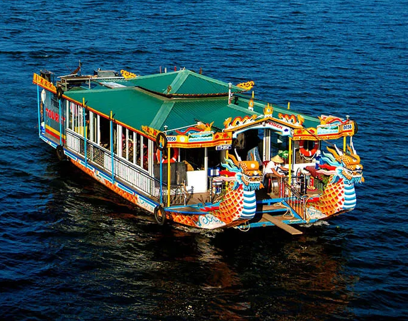
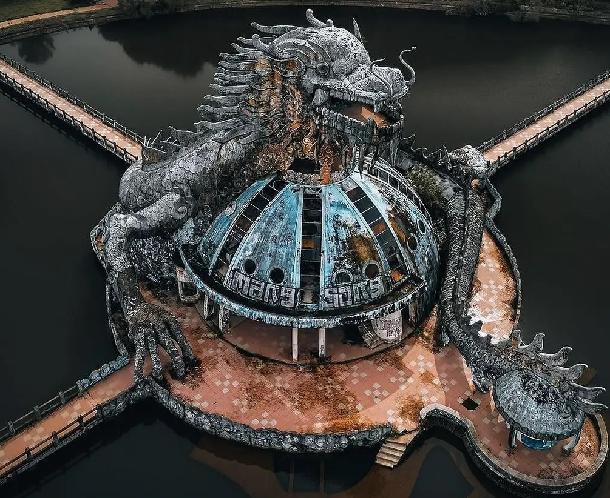

Hue Imperial City: A Timeless Journey
Chuong Duc Gate
Chuong Duc Gate, one of Hue Imperial City’s main gates, was built in 1804 under Emperor Gia Long. Featuring intricate architecture and rich history, it served as a vital entrance to the royal citadel, reflecting Vietnam’s imperial heritage..

Traditional handicrafts
Traditional handicrafts include embroidery, bronze casting, conical hat making, and wood carving. Passed down through generations, they showcase Hue’s rich heritage and contribute to its artistic and economic identity.
Thien Mu Pagoda
Thien Mu Pagoda, Hue City’s iconic landmark, stands on Ha Khe Hill by the Hương River. Built in 1601, it features a seven-story tower, ancient relics, and peaceful surroundings, symbolizing Vietnam’s spiritual heritage and attracting visitors worldwide.
Huong River
The Huong River, or Perfume River, flows through Hue City, Vietnam. Known for its poetic beauty, it enhances Hue’s charm, reflecting historic sites like the Imperial City and pagodas, making it a significant cultural and tourist attraction.

Hue Imperial City: Recommended Itineraries
Hue, the ancient capital of Vietnam, is a city filled with rich history, stunning architecture, and breathtaking natural beauty. Whether you're a history enthusiast, a nature lover, or someone looking to experience the local culture, Hue offers something for everyone. Here are some recommended itineraries to help you make the most of your visit, from exploring the imperial citadels and royal tombs to relaxing by the Perfume River and enjoying the local cuisine.
| Itinerary Type | Best For | Recommended Places | Duration | More Info |
|---|---|---|---|---|
|
Historical Journey  |
History lovers & culture seekers |
Imperial City, Thien Mu Pagoda, Tomb of Khai Dinh, Tomb of Tu Duc |
1 Day | View More |
|
Food Lover's Tour  |
Street food explorers | Dong Ba Market, Com Hen, Bun Bo Hue | Half Day | View More |
|
Nature Escape  |
Scenic travelers | Lang Co Beach, Bach Ma National Park | 1-2 Days | View More |
|
Romantic Getaway  |
Couples | Perfume River cruise, Hue Royal Tea | Evening | View More |
|
Family-Friendly Trip  |
Families with kids | Hue Water Park, Thanh Toan Bridge, Citadel | Full Day | View More |